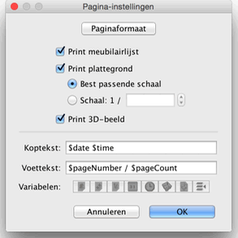
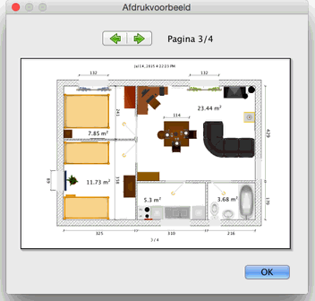

| Een huis printen | |||
Kies Bestand > Print... om een huis te printen. Standaard print Sweet Home 3D de meubilairlijst, de plattegrond en het 3D-beeld met normaal papierformaat, marges en oriëntatie.  In dit paneel kun je de paginagrootte en oriëntatie wijzigen door te klikken op Paginaformaat.
Je kunt ook kiezen of de meubilairlijst, de plattegrond en het 3D-beeld geprint moeten worden of niet. Als je niet de schaal wilt gebruiken die Sweet Home 3D berekend heeft als best passend, kun je in het Schaal veld een andere waarde invoeren.
Gebruik de knoppen Variabelen onder de velden Koptekst en Voettekst om niet de exacte naam van een variabele te hoeven typen. Omdat het $-teken gereserveerd is voor variabelen, moet je $$ typen om het $-teken te laten printen. Voordat je gaat printen, kun je een voorbeeld bekijken op je scherm, door te kiezen voor Bestand > Afdrukvoorbeeld....  In het afdrukvoorbeeld kun je pagina voor pagina zien hoe het zal worden geprint. Om van pagina te wisselen, kun je de pijlen bovenaan of de pijltjestoetsen gebruiken. |
|